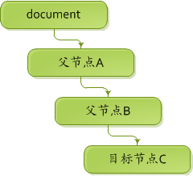
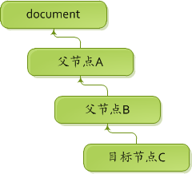

浏览器事件（1）：事件模型
事件模型的概述
事件模型描述的是浏览器页面中事件的工作机制，为了更好地进行后续的学习，我们先来了解以下关于事件的几点描述：
- 在JavaScript中，你与页面的每一项交互，都会触发页面中的某个或多个事件，所谓的“事件”就是指可以被页面识别的操作。例如：你点击一个按钮，会触发该按钮的单击事件；你在一个文本框内输入文字，则会触发该文本框的文本变更事件。
- 当你对页面中的元素进行相关操作时，往往会得到页面对你的行为所作出的反馈，这个反馈动作我们使用“事件处理程序”来进行描述。例如：当你点击页面中某个表单的提交按钮时，就会触发该表单的提交事件的事件处理程序，在该处理程序中，往往会先判断你输入的信息是否正确，如果不正确则会提示你重新输入；当全部输入无误后则会将表单中填写的相关数据以某种形式提交给后端页面进行处理，之后可能还会对操作的成功与否进行相关提示。
-
当我们点击页面中的某个元素时，其实我们也点击了该元素的所有父级元素，甚至点击了整个页面。这样一来，我们就需要思考一个问题：事件处理程序的触发到底该发生在被点击的当前元素，还是当前元素以及该元素的所有父级元素？如果是后者，那么事件处理程序被触发的顺序是从当前元素至父级元素逐级触发还是从父级元素至当前元素逐级触发？为了解决这一问题，JavaScript使用了名为“事件流”的机制来描述事件被触发的先后顺序。
事件流的工作模式大致如下图所示（现在看不懂没关系，后续将逐一进行讲解）：

事件对象
任何事件被触发后，浏览器都会为这次事件创建一个事件对象，用来保存此次事件的相关信息。
在标准的事件模型中，事件对象会作为参数传递给事件处理程序，代码示例如下：
document.onclick = function(e)
{
alert(e.offsetX); //其中参数e即为本次事件的事件对象，offsetX属性表示鼠标点击时相对于目标元素的X轴坐标位置
}
在IE6~8的非标准实现中，事件对象使用全局的event对象表示，这给我们的代码编写带来了些许不便。
为了实现各浏览器之间的兼容性操作，我们通常采取如下面所示的语句来获取事件对象：
document.onclick = function(e)
{
e = e || window.event; //事件对象的兼容性处理
alert(e.offsetX);
}
注：IE9已实现标准的事件对象模型。
小贴士：
- 事件对象的type属性（e.type）可以让我们获知被触发的事件类型，如单击事件的类型为“click”，双击事件的类型为“dblclick”。（注：该属性返回的结果在所有浏览器中均不带“on”前缀）
- 欲知事件对象中更多的属性价值，请在掌握本节的内容后继续学习：JavaScript学习指南：浏览器事件 - 事件类型。
事件处理程序
事件处理程序，又名为“事件监听器”或者“事件侦听器”（简称“监听器”或“侦听器”），是指对用户的操作所做出的反馈。
在使用事件处理程序之前我们需要将其绑定到元素的相关事件中，这一操作我们称之为“事件绑定”。事件的绑定主要有两种方式，分别是HTML属性方式和事件接口方式。
HTML属性方式
-
直接方式
<body onclick="alert('点击点击点击...')"></body> -
引用方式
<script> function show() { alert("Welcom to China!"); } </script> <body onclick="show();"></body> -
纯脚本方式
<script> document.onclick = function() { alert("这是页面的单击事件！"); } </script>
在HTML属性方式中，直接方式和引用方式均通过HTML标签的事件属性进行添加，事件属性的名称均带有“on”前缀，它们的唯一区别是，直接方式的执行代码全都包含在事件属性的值中，代码和绑定是组合在一起的；而引用方式的执行代码则通过函数调用执行，代码与绑定是分离的。
纯脚本方式则通过相应的DOM元素的事件属性进行添加，事件属性的名称也带有“on”前缀，且代码与绑定是组合在一起的。直接方式实际上是生成了一个匿名函数，与纯脚本方式相同，其执行代码中this关键字指向的即是目标元素本身。
使用属性方式进行事件绑定有以下几点不足：
-
时差问题
用户可能在HTML元素一出现就点击了这个元素，而该元素恰巧使用了引用方式添加了事件绑定，且事件处理程序放于页面底部进行的声明。如果用户在点击这个元素时，处理程序还未得到解析，那么页面就会引发脚本错误。
-
浏览器解析不一致
通过属性方式添加的事件绑定，其处理程序的作用域链在不同浏览器中可能会导致不同结果。不同JavaScript引擎遵守的标识符解析规则略有差异，很可能在访问非限定对象成员时出错。
-
不便于维护
采用引用方式添加绑定操作时，通常会将函数代码单独放置于JS文件中。如果后期需要更换处理程序或者是参数设置，那么就得改动两个地方：HTML代码和JavaScript代码。
-
重复与覆盖
如果使用属性方式进行事件绑定，可能会造成这种现象：同事A在某个地方为元素E添加了点击事件的绑定操作，几天后同事B在另外一个地方为元素E也添加了点击事件的绑定操作，最后同事B的绑定操作覆盖了同事A的绑定操作，结果导致同事A预期的操作将无法被执行。
注：通过属性方式添加的事件绑定会覆盖之前通过属性方式添加的绑定操作，但不会影响之前通过事件接口添加的绑定操作。
事件绑定的解除：
添加事件绑定是为了给予反馈，也可以说是为了某些功能的需要。但在某些情况下，当事件处理程序被触发后就不再需要了，此时就需要解除本次事件的绑定，避免它再次做出不必要的响应。通过属性方式添加的事件绑定，我们可以通过如下所示的代码进行解除：
document.onclick = null; //将事件属性赋值为null，即可解除原有的事件绑定！
事件接口方式
通过HTML属性方式，我们只能为HTML元素添加一次事件绑定，如果试图增加绑定操作，那么原先的绑定就会被新的覆盖，这种特性将导致无法在代码运行期间扩展事件处理程序的行为。解决这一问题的办法就是使用事件接口方式对事件处理程序进行绑定，该方式允许我们为元素的某个事件添加多个事件绑定，且彼此间不受影响。绑定方式如下：
if("addEventListener" in document)
{
//针对标准的事件模型
document.addEventListener("click", function(e)
{
alert("单击事件被触发！");
}, 0);
}
else
{
//针对IE6~8的非标准事件模型
document.attachEvent("onclick", function(e)
{
alert("单击事件被触发！");
});
}
相关事项说明如下：
-
addEventListener方法用于标准事件模型中的事件绑定操作，共三个参数，按先后顺序依次为：事件名称、事件处理程序、是否捕捉。
- 事件名称（字符串），不带“on”前缀；
- 事件处理程序（函数），this关键字指向目标元素本身；
- 是否捕捉（布尔值），默认值为false（或任何可以转换为false的值，如0、undefined），表示不进行对事件的捕捉操作。当该值为ture（或任何可以转换为true的值，如1）时，则表示将进行对事件的捕捉操作。关于事件捕捉的更多内容，稍后再做讲解。
- 通过该方法为目标元素的同一事件添加多个事件处理程序后，当事件被触发时，各事件处理程序的执行按照被添加的先后顺序依次执行。
-
attachEvent方法用于IE6~8非标准事件模型中的事件绑定操作，共两个参数，按先后顺序依次为：事件名称、事件处理程序。
- 事件名称（字符串），必须带有“on”前缀；
- 事件处理程序（函数），this关键字指向window全局对象；
- IE6/7/8不支持事件的捕捉操作。
- 通过该方法为目标元素的同一事件添加多个事件处理程序后，当事件被触发时，各事件处理程序的执行按照被添加时的相反顺序依次执行。
事件绑定的解除：
解除通过HTML属性方式添加的事件绑定，我们只需要将事件属性的值设置为null即可。但通过事件接口方式添加的事件绑定，我们则需要使用指定的方法传递相关参数才能解除。代码如下：
if("removeEventListener" in document)
{
//针对标准的事件模型
document.removeEventListener("click", funcReference, 0);
}
else
{
//针对IE6~8的非标准事件模型
document.detachEvent("onclick", funcReference);
}
在解除事件绑定的上述代码中，我们使用了removeEventListener和detachEvent两个方法，分别用于标准和非标准的事件模型，且所需传递的参数与添加绑定时的参数必须一一对应。
在添加事件绑定时，第二个参数既可以是函数的引用也可以是匿名函数的声明；而解除事件绑定时，第二个参数则必须是添加事件绑定时事件处理程序的函数引用。
事件目标
任何一个事件的产生总会伴随着一个结果的出现，例如点击Windows系统的开始按钮就会出现一个开始菜单。对于程序来说，必须要确定用户点击的是开始按钮而不是其他别的地方，这样才能做出正确的响应。
在JavaScript中的事件模型中，任何一个事件对象都包含一个事件目标，用来表示用户的操作是基于哪一个目标元素进行的，是div、p还是table等。
在标准的事件模型中，事件目标使用事件对象的target属性表示；而在IE的非标准事件模型中，则将事件目标称之为“事件源”，使用事件对象的srcElement属性表示。为了实现兼容性处理，我们通常使用如下代码来获取事件目标属性：
document.onclick = function(e)
{
e = e || window.event; //事件对象的兼容性处理
var target = e.target || e.srcElement; //事件目标的兼容性处理
}
默认行为
当我们在文本输入框键入字符时就会产生一个对应字符的输出，当我们点击文本链接时则会打开一个新的页面，这些敲击或者是点击行为产生的结果就是事件的默认行为。
但有时我们需要取消这种默认行为，比如我们要求文本框中输入的是数字，那么我们就应该屏蔽非数字字符的键入。
取消默认行为的标准方法如下代码所示：
<a href="http://www.baidu.com/" id="test_a">文本链接</a>
<script>
document.getElementById("test_a").onclick = function(e)
{
e = e || window.event;
if("preventDefault" in e)
{
//用于标准事件模型，取消默认行为
e.preventDefault();
}
else
{
//用于非标准事件模型，取消默认行为
e.returnValue = false;
}
}
</script>
在上面的代码中，默认情况下点击文本链接将会打开“http://www.baidu.com/”这个网站，但由于取消了默认行为，所以点击文本链接将不会有任何反应。
除了上面的标准方法外，其实还有另外一种更加简化的取消默认行为的方式，那就是在目标元素的事件处理程序中直接使用return语句返回一个false值即可（只能是false，不能是0或者是其他值）：
<a href="http://www.baidu.com/" id="test_a">文本链接</a>
<script>
document.getElementById("test_a").onclick = function(e)
{
return false; //取消默认行为的最简方法
}
</script>
事件流
事件流描述的是页面中事件被触发的先后顺序，包含三个阶段：事件捕捉阶段、处于目标阶段、事件冒泡阶段。
在继续了解这三个阶段的不同行为之前，还请各位同学在页面中运行如下所示的代码示例。
下面的代码示例中，我们分别为三个均为父子关系的div元素添加了单击事件的事件处理程序，当点击目标div元素时将会弹出该div所对应的描述文本，分别是div1、div2、div3。各位同学在运行下面的代码时，可观察当鼠标点击不同的div时所弹出信息的不同，并尝试做出相关总结。具体的事项我们将在后续部分进行讲解。
<!DOCTYPE html>
<html lang="zh-CN">
<head>
<base charset="utf-8" />
<title>事件模型：事件流案例_1</title>
<style>
*{margin:0;padding:0;}
div{margin:0 auto;font-size:24px;line-height:2em;text-align:center;}
#div1{width:450px;height:450px;background:gray;}
#div2{width:300px;height:300px;background:green;}
#div3{width:150px;height:150px;background:orange;}
</style>
</head>
<body>
<div id="div1">
div1
<div id="div2">
div2
<div id="div3">
div3
</div>
</div>
<div>
<script>
if("addEventListener" in document)
{
document.getElementById("div1").addEventListener("click", function(e)
{
alert("div1");
}, 0);
document.getElementById("div1").addEventListener("click", function(e)
{
alert("div2");
}, 0);
document.getElementById("div3").addEventListener("click", function(e)
{
alert("div3");
}, 0);
}
else
{
document.getElementById("div1").attachEvent("onclick", function(e)
{
alert("div1");
});
document.getElementById("div2").attachEvent("onclick", function(e)
{
alert("div2");
});
document.getElementById("div3").attachEvent("onclick", function(e)
{
alert("div3");
});
}
</script>
</body>
</html>
事件捕捉阶段

当一个事件被触发后，浏览器会从文档对象的根，也就是document对象开始，按照事件传递路径（document→父节点→...→父节点→目标节点）将事件传递给目标节点，这个事件被传递的过程我们将其理解为事件捕捉阶段。
在该阶段中，目标节点的任意父级元素均可以对事件进行拦截，从而使父级元素的事件处理程序优先于目标节点执行。
在之前的“事件模型：事件流案例-1”中，当你点击div3时，事件被触发的先后顺序依次为div3、div2、div1，也就是说在默认情况下，事件是按照“目标节点→父级元素”的顺序被先后触发的。
如果在上面的代码示例中，我们为div1元素设置了事件捕捉，那么当我们点击div3时，事件被触发的先后顺序就会发生变化，将依次是div1、div3、div2。同理，如果我们为div2元素也设置了事件捕捉，那么事件被触发的先后顺序就变为了div1、div2、div3。
各位同学可以在“事件模型：事件流案例-1”中相关元素的事件绑定中，将是否捕捉参数由0改为1再做结果对比，以此来加深对事件捕捉操作的理解！
最后需要强调的是：IE6~8不支持事件捕捉操作，上述所说的现象在IE6~8中并不会发生。
处于目标阶段
该阶段就是指事件被传递到了目标节点，并触发了事件处理程序的执行。由于之前已经对事件处理程序进行了说明，这里就不再复述。
事件冒泡阶段

当事件被传递到目标节点之后，目标节点的事件处理程序即被触发，之后事件便会进行事件冒泡，也就是进行事件的一个反向传递（目标节点→父节点→...→父节点→document）。在本次事件传递的过程中，如果接收到事件的元素进行了事件绑定操作，那么对应的事件处理程序就会被触发。正是因为这一行为，在“事件模型：事件流案例-1”中当我们点击div3后，先是触发了div3的事件处理程序，之后又依次触发了div2和div1的事件处理程序。
防止事件冒泡：
事件的冒泡机制有时可以给我们的编程工作带来便利，但有时这种特性也会对程序带来不良后果。因此，标准事件模型和IE的非标准事件模型都提供了取消冒泡行为的方法，只要将其加入到目标节点的事件处理程序中的任意位置（通常放置在末尾处）即可，这样当浏览器执行到该方法时就会停止事件的冒泡行为（但依旧会执行完事件处理程序中的后续代码）。
我们依旧拿“事件模型：事件流案例-1”中的代码为例，当我们点击div3元素后，事件被触发的先后顺序依次为div3、div2、div1。如果我们在div2元素的事件处理程序中使用了取消冒泡行为的方法，那么在div3和div2的事件处理程序被触发后将不会触发div1的事件绑定。如果我们在div3元素的事件处理程序中使用了取消冒泡行为的方法，那么div2和div1的事件都不会被触发。
与取消默认行为的方法一样，标准模型和非标准模型中所使用的用于取消冒泡行为的方式也是不一致的，所以我们通常使用如下所示的兼容代码来进行：
document.getElementById("div1").onclick = function(e)
{
e = e || window.event;
if("stopPropagation" in e)
{
//用于标准事件模型，取消冒泡行为
e.stopPropagation();
}
else
{
//用于非标准事件模型，取消冒泡行为
e.cancelBubble = true;
}
}
事项说明：
- 当我们点击了目标元素的某个子级元素后，通常会通过冒泡机制将事件反向传递给目标元素且触发目标元素的事件处理程序，此时在目标元素的事件处理程序中，事件目标将是这个子级元素，而不是目标元素。
- 在“事件模型：事件流案例-1”中，如果为div1元素设置了事件捕捉，并且在事件处理程序中也取消了冒泡行为，那么结果将导致在触发div1的事件处理程序后，div3和div2的事件均不会被触发。
兼容性封装
由于事件模型在不同浏览器中的差异性问题，所以我们在将其应用于实际工作之前需要对它们进行一次兼容性封装，从而避免每次使用时造成的代码冗余。
在本节内容中，主要涉及到的兼容性操作有以下几点：
- 事件对象传递方法的不一致；
- 添加事件绑定的接口不一致；
- 解除事件绑定的接口不一致；
- 事件目标表示方式的不一致；
- 取消默认行为的方式不一致；
- 取消冒泡行为的方式不一致；
- 事件处理程序中this关键字所指向的目标不一致；
在本次兼容性封装中，我们可以考虑用两种不同的方式来进行实现：代码封装法、事件对象重置法。
代码封装法
该方法将为事件模型中所有不兼容的方法或属性使用一个单独的函数进行封装调用，从而确保它们在各大浏览器中的一致性。
经测试无误后，封装代码参见如下：（测试地址：事件模型-兼容性封装_1）
$.fn.extend({
/**
* 添加事件绑定
* @param {String} name 事件名称
* @param {Function} handler 事件处理程序
* @param {Boolean} [capture=false] 是否进行事件捕捉
* @return {Function} 事件处理程序
* @example
* var testID_click = $$("#testID").bind("click", function()
* {
* alert("点击事件！");
* });
*/
bind: function(name, handler, capture)
{
return jsApp.map(this, function(index, ele)
{
//兼容事件对象、this关键字
var callback = function(e)
{
e = e || window.event;
handler.call(e.target || e.srcElement, e);
}
//事件绑定的兼容性操作
"addEventListener" in ele ?
ele.addEventListener(name, callback, capture) :
ele.attachEvent("on" + name, callback);
//返回“事件处理程序”，在添加事件绑定时可使用相关变量进行收集，以便进行取消事件绑定操作！
return callback;
});
},
/**
* 解除事件绑定
* @param {String} name 事件名称
* @param {Function} handler 事件处理程序
* @param {Boolean} [capture=false] 是否进行事件捕捉
* @example
* $$("#testID").unbind("click", testID_click);
*/
unbind: function(name, handler, capture)
{
return jsApp.map(this, function(index, ele)
{
//解除绑定的兼容性操作
"removeEventListener" in ele ?
ele.removeEventListener(name, handler, capture) :
ele.detachEvent("on" + name, handler);
});
}
});
$.extend({
/**
* 获取事件目标
* @param {Object} e 事件对象
* @return {HTMLElement} 事件目标
*/
target: function(e)
{
return e.target || e.srcElement;
},
/**
* 取消默认行为
* @param {Object} e 事件对象
*/
preventDefault: function(e)
{
"preventDefault" in e ? e.preventDefault() : (e.returnValue = false);
},
/**
* 取消冒泡行为
* @param {Object} e 事件对象
*/
stopPropagation: function(e)
{
"stopPropagation" in e ? e.stopPropagation() : (e.cancelBubble = true);
}
});
事件对象重置法
该方法主要将事件对象中需要使用到的属性和方法均进行重写，从而确保事件处理程序中事件对象的每个属性和方法在各大浏览器中均保持兼容。
经测试无误后，封装代码参见如下：（测试地址：事件模型-兼容性封装_2）
注：为了保持代码的完整性，已将后续需要接触到相关属性和方法也包含在面的代码中。
$.fn.extend({
/**
* 添加事件绑定
* @param {String} name 事件名称
* @param {Function} handler 事件处理程序
* @param {Boolean} [capture=false] 是否进行事件捕捉
* @return {Function} 事件处理程序
* @example
* var testID_click = $$("#testID").bind("click", function()
* {
* alert("点击事件！");
* });
*/
bind: function(name, handler, capture)
{
return jsApp.map(this, function(index, ele)
{
//兼容事件对象、this关键字
var callback = function(e)
{
e = jsApp.rewriteEvent(e);
handler.call(e.target, e);
}
//事件绑定的兼容性操作
"addEventListener" in ele ?
ele.addEventListener(name, callback, capture) :
ele.attachEvent("on" + name, callback);
//返回“事件处理程序”，在添加事件绑定时可使用相关变量进行收集，以便进行取消事件绑定操作！
return callback;
});
},
/**
* 解除事件绑定
* @param {String} name 事件名称
* @param {Function} handler 事件处理程序
* @param {Boolean} [capture=false] 是否进行事件捕捉
* @example
* $$("#testID").unbind("click", testID_click);
*/
unbind: function(name, handler, capture)
{
return jsApp.map(this, function(index, ele)
{
//解除绑定的兼容性操作
"removeEventListener" in ele ?
ele.removeEventListener(name, handler, capture) :
ele.detachEvent("on" + name, handler);
});
}
});
$.extend({
/**
* 对事件对象进行重写
* @param {Object} e 重写前的事件对象
* @return {Object} 重写后的事件对象
* @example
* e = jsApp.rewriteEvent(e);
*/
rewriteEvent: function(e)
{
e = e || window.event;
var type = e.type,
target = e.target || e.srcElement,
compatible = {
//事件类型，即事件的名称，如：click、dblclick、mouseover
type: type,
//事件目标，即用户的操作是基于哪一个目标元素进行的
target : target,
//Ctrl键是否按下
ctrlKey: e.ctrlKey,
//Shift键是否按下
shiftKey: e.shiftKey,
//Alt键是否按下
altKey: e.altKey,
//防止事件冒泡
stopPropagation: function()
{
"stopPropagation" in e ? e.stopPropagation() : (e.cancelBubble = true);
},
//取消默认行为
preventDefault: function()
{
"preventDefault" in e ? e.preventDefault() : (e.returnValue = false);
}
};
//鼠标事件
if(/mouse|click/gi.test(type))
{
//作用于鼠标事件, 对于mouseover而言表示从哪个DOM元素进来，而对于mouseout而言则表示鼠标着落在那个DOM元素
compatible.relatedTarget = e.relatedTarget === undefined ? (type === "mouseover" ? e.fromElement : e.toElement) : e.relatedTarget;
//鼠标相对于目标元素的X轴坐标位置（由于offsetX和offsetY并没有被加入标准，所以Firefox浏览器并不支持这两个属性）
compatible.offsetX = e.offsetX === undefined ? (e.clientX - target.getBoundingClientRect().left) : e.offsetX;
//鼠标相对于目标元素的Y轴坐标位置
compatible.offsetY = e.offsetY === undefined ? (e.clientY - target.getBoundingClientRect().top) : e.offsetY;
//鼠标相对于文档显示区的X轴坐标位置
compatible.clientX = e.clientX;
//鼠标相对于文档显示区的Y轴坐标位置
compatible.clientY = e.clientY;
//鼠标相对于整个页面的X轴坐标位置（pageX和pageY在IE6/7/8中没有得到支持）
compatible.pageX = e.pageX === undefined ? (document.documentElement.scrollLeft + event.clientX) : e.pageX;
//鼠标相对于整个页面的Y轴坐标位置
compatible.pageY = e.pageY === undefined ? (document.documentElement.scrollTop + event.clientY) : e.pageY;
//鼠标相对于屏幕的X坐标位置
compatible.screenX = e.screenX;
//鼠标相对于屏幕的Y坐标位置
compatible.screenY = e.screenY;
//判断鼠标所按的是哪个键（0—左键；1—中间键；2—右键）
if(document.implementation.hasFeature("MouseEvents", "2.0"))
{
compatible.button = e.button;
}
else
{
//在非标准的IE6/7/8事件模型下，按键有7个值
switch(e.button)
{
case 0:
case 1:
case 3:
case 5:
case 7:
compatible.button = 0;
break;
case 2:
case 6:
compatible.button = 2;
break;
case 4:
compatible.button = 1;
break;
}
}
}
//键盘按键事件的兼容性处理
else if(/key/gi.test(type))
{
//键盘按键的键码值
compatible.keyCode = e.keyCode === 0 ? e.charCode : e.keyCode;
}
return compatible;
}
});
利弊对比
-
代码封装法
该方法是一种较为单一的封装形式，每个不兼容的属性和方法都需要使用独立的函数来进行处理。由于不兼容的属性较多，所以需要封装的函数也就多了起来。在使用的过程中，兼容的属性我们依旧使用属性表示，但不兼容的属性我们则需要调用已封装的函数来进行获取。在刚开始的时候，这是没有问题的，但随着时间的往后推移我们则会慢慢混淆：到底哪些属性我们可以直接使用属性表示，哪些属性我们则需要通过方法调用来获取。
-
事件对象重置法
该方法其实是对代码封装法的一次升级，该方法完全对事件对象进行了重写。该方法弥补了代码封装法的不足，在事件处理程序中我们可以直接使用标准事件模型中的方法和属性而不用担心它们是否存在兼容性问题，也不需要担心什么时候该使用函数调用的形式什么时候则可以直接使用属性形式的问题。
该方法在提高使用体验的同时，也在一定程度上降低了程序的运行效率。每次触发事件处理程序后，在执行代码之前均需要对事件对象的所有属性和方法进行一次兼容性处理操作，这需要时间成本；而每次触发事件处理程序后，都需要创建一个自定义的事件对象，这需要内存成本。这两者在代码封装法里面都是不需要进行的操作。
如果你极度追求代码的运行性能，可能你更喜欢代码封装法；而如果你对代码的使用体验有一定要求，而又希望在性能之间取得平衡的话，可能事件对象重置法更适合你。在两者方法之间，我选择了后者
在本节课程结束之前，我以将事件对象重置法中的相关代码加入到了jsApp.js中（点击测试），以后大家在实例操作时就可以使用它们了。大家还在等什么，赶快将这些代码也加入至你的文件中吧！
课后考核
- 请你口头描述“事件”、“事件处理程序”、“事件对象”、“事件目标”、“默认行为”、“事件流”的概念。
- 事件流分为哪几个阶段？每个阶段所会进行的操作有哪些？
- 添加事件绑定时，有HTML属性方式和事件接口方式可供选择，它们有何不同？有什么优缺点？
- 针对各大浏览器对事件模型中相关方法和属性的差异性，在运用于实际开发项目之前需要对其进行兼容性封装，为什么要这么做？
- 在对事件模型进行兼容性封装时，我们分别采用了代码封装法和事件对象重置法进行了演示，他们之间有何不同？，在实际项目开发中我们可以采用哪种方式来进行？
- 在本节内容中，我们展示了大量代码，包括各属性和方法的兼容性处理方式。关于这些代码示例，你有在自己的电脑上手工输入进行调试了吗？你确保代码输入方式没有使用复制粘贴吗？在运行成功之后，你有没有尝试更改代码中的部分代码再测试运行？
如果你无法将上述问题直接口述表达，说明你对这些概念和知识点还未理解透彻和掌握，需要再花些时间重新温故和多加练习。
现在当你再次回过头去看概述中的那个工作模式图时，如果你一看到图片就能联想到各个环节的工作模式和代码的处理方式，那么恭喜你，你可以学习下一章节了。